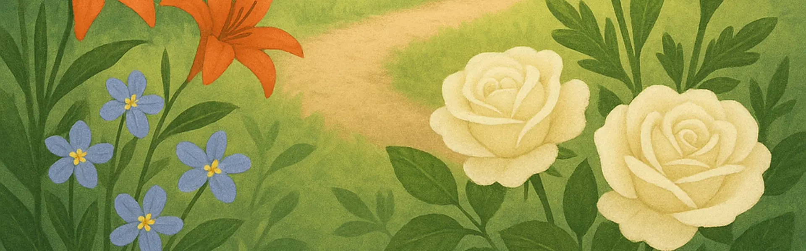
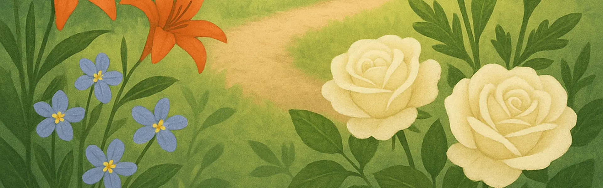
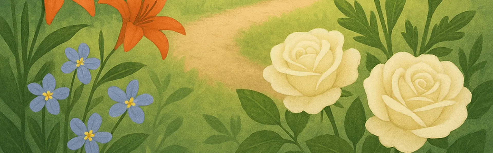
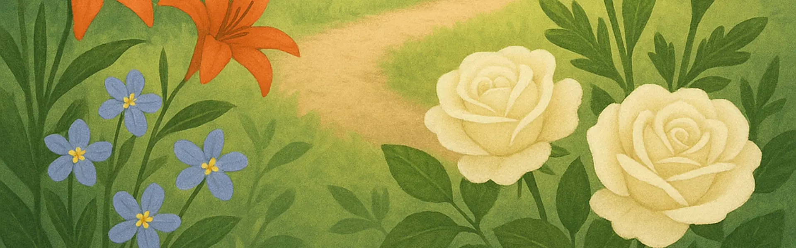

 

Step into a digital garden where every flower carries a whisper of care, a note of meaning, and a moment to be shared.
This Week's Favourite Flower: Tuberose
"Jasmine symbolizes purity and grace in many traditions, often used in ceremonies and celebrations."
Bloom & Share is a digital space born from a very analogue tradition the act of giving flowers. Flowers have always carried layered meanings in cultures worldwide, including Sri Lanka: purity, celebration, remembrance, and healing.
Flower description will appear here.